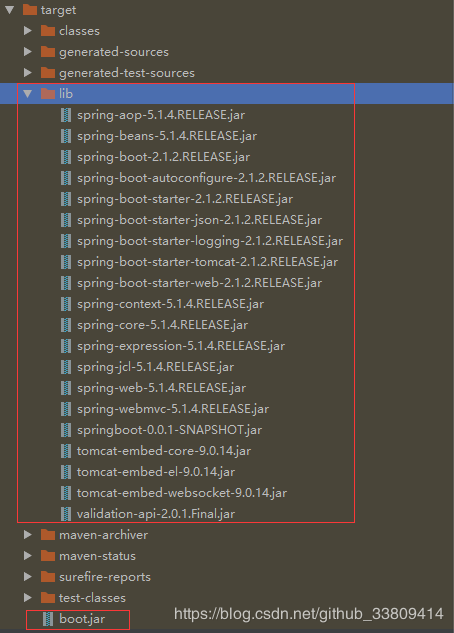

<!DOCTYPE html><html lang="en"><head><meta name="generator" content="Hexo 3.9.0"><meta charset="utf-8"><meta name="keywords" content="松林羊, ysl, songlinsheep, andus, blog, 个人站点, 个人网站"><meta name="description" content="松林羊的个人网站，用于记录，分享。欢迎交流^-^"><meta name="viewport" content="width=device-width,initial-scale=1,maximum-scale=1"><title> Maven项目代码和jar包分开打包 | 松林羊</title><link rel="shortcut icon" href="/smile.ico"><link rel="stylesheet" href="/css/style.css"><link rel="stylesheet" href="/fancybox/jquery.fancybox.min.css"><script src="/js/pace.min.js"></script><script>!function(e,t,o,c,i,a,n){e.DaoVoiceObject=i,e[i]=e[i]||function(){(e[i].q=e[i].q||[]).push(arguments)},e[i].l=1*new Date,a=t.createElement(o),n=t.getElementsByTagName(o)[0],a.async=1,a.src=c,a.charset="utf-8",n.parentNode.insertBefore(a,n)}(window,document,"script",("https:"==document.location.protocol?"https:":"http:")+"//widget.daovoice.io/widget/0f81ff2f.js","daovoice"),daovoice("init",{app_id:"1559132c"}),daovoice("update")</script></head></html><body><main class="content"><section class="outer"><article id="post-Maven项目代码和jar包分开打包" class="article article-type-post" itemscope itemprop="blogPost" data-scroll-reveal><div class="article-inner"><header class="article-header"><h1 class="article-title" itemprop="name"> Maven项目代码和jar包分开打包</h1></header><div class="article-meta"> <a href="/2019/02/14/Maven项目代码和jar包分开打包/" class="article-date"><time datetime="2019-02-14T02:36:36.000Z" itemprop="datePublished">2019-02-14</time></a><div class="article-category"> <a class="article-category-link" href="/categories/开发辅助工具/">开发辅助工具</a></div> &emsp;<i class="fe fe-bar-chart"></i> <span class="post-count">390</span>字 &emsp;<i class="fe fe-clock"></i> <span class="post-count">2</span>分钟</div><div class="tocbot"></div><div class="article-entry" itemprop="articleBody"><h3 id="引言"><a href="#引言" class="headerlink" title="引言"></a>引言</h3><p>代码包和依赖包分开打包这样的好处是：如果只修改了逻辑代码，没有修改依赖，就只需要更新代码包即可。<br>在pom.xml中<build>下<pulgins>中做如下修改：</pulgins></build></p><h3 id="步骤1"><a href="#步骤1" class="headerlink" title="步骤1"></a>步骤1</h3><p>&lt;project&gt;节点中修改</p><figure class="highlight xml"><table><tr><td class="gutter"><pre><span class="line">1</span><br></pre></td><td class="code"><pre><span class="line"><span class="tag">&lt;<span class="name">packaging</span>&gt;</span>war<span class="tag">&lt;/<span class="name">packaging</span>&gt;</span>改成<span class="tag">&lt;<span class="name">packaging</span>&gt;</span>jar<span class="tag">&lt;/<span class="name">packaging</span>&gt;</span></span><br></pre></td></tr></table></figure><h3 id="步骤2"><a href="#步骤2" class="headerlink" title="步骤2"></a>步骤2</h3><p>&lt;build&gt;下&lt;plugins&gt;节点中注释掉</p><figure class="highlight xml"><table><tr><td class="gutter"><pre><span class="line">1</span><br><span class="line">2</span><br><span class="line">3</span><br><span class="line">4</span><br></pre></td><td class="code"><pre><span class="line"><span class="tag">&lt;<span class="name">plugin</span>&gt;</span></span><br><span class="line">   <span class="tag">&lt;<span class="name">groupId</span>&gt;</span>org.springframework.boot<span class="tag">&lt;/<span class="name">groupId</span>&gt;</span></span><br><span class="line">    <span class="tag">&lt;<span class="name">artifactId</span>&gt;</span>spring-boot-maven-plugin<span class="tag">&lt;/<span class="name">artifactId</span>&gt;</span></span><br><span class="line"><span class="tag">&lt;/<span class="name">plugin</span>&gt;</span></span><br></pre></td></tr></table></figure><h3 id="步骤3"><a href="#步骤3" class="headerlink" title="步骤3"></a>步骤3</h3><p>&lt;build&gt;下&lt;plugins&gt;节点中添加如下配置：</p><figure class="highlight xml"><table><tr><td class="gutter"><pre><span class="line">1</span><br><span class="line">2</span><br><span class="line">3</span><br><span class="line">4</span><br><span class="line">5</span><br><span class="line">6</span><br><span class="line">7</span><br><span class="line">8</span><br><span class="line">9</span><br><span class="line">10</span><br><span class="line">11</span><br><span class="line">12</span><br><span class="line">13</span><br><span class="line">14</span><br><span class="line">15</span><br><span class="line">16</span><br><span class="line">17</span><br><span class="line">18</span><br><span class="line">19</span><br><span class="line">20</span><br><span class="line">21</span><br><span class="line">22</span><br><span class="line">23</span><br><span class="line">24</span><br><span class="line">25</span><br><span class="line">26</span><br><span class="line">27</span><br><span class="line">28</span><br><span class="line">29</span><br><span class="line">30</span><br><span class="line">31</span><br><span class="line">32</span><br><span class="line">33</span><br><span class="line">34</span><br><span class="line">35</span><br><span class="line">36</span><br><span class="line">37</span><br><span class="line">38</span><br></pre></td><td class="code"><pre><span class="line"><span class="tag">&lt;<span class="name">plugin</span>&gt;</span></span><br><span class="line">	<span class="tag">&lt;<span class="name">groupId</span>&gt;</span>org.apache.maven.plugins<span class="tag">&lt;/<span class="name">groupId</span>&gt;</span></span><br><span class="line">	<span class="tag">&lt;<span class="name">artifactId</span>&gt;</span>maven-dependency-plugin<span class="tag">&lt;/<span class="name">artifactId</span>&gt;</span></span><br><span class="line">	<span class="tag">&lt;<span class="name">executions</span>&gt;</span></span><br><span class="line">	 <span class="tag">&lt;<span class="name">execution</span>&gt;</span></span><br><span class="line">	     <span class="tag">&lt;<span class="name">id</span>&gt;</span>copy-installed<span class="tag">&lt;/<span class="name">id</span>&gt;</span></span><br><span class="line">	     <span class="tag">&lt;<span class="name">phase</span>&gt;</span>package<span class="tag">&lt;/<span class="name">phase</span>&gt;</span></span><br><span class="line">	     <span class="tag">&lt;<span class="name">goals</span>&gt;</span></span><br><span class="line">	         <span class="tag">&lt;<span class="name">goal</span>&gt;</span>copy<span class="tag">&lt;/<span class="name">goal</span>&gt;</span></span><br><span class="line">	     <span class="tag">&lt;/<span class="name">goals</span>&gt;</span></span><br><span class="line">	     <span class="tag">&lt;<span class="name">configuration</span>&gt;</span></span><br><span class="line">	         <span class="tag">&lt;<span class="name">artifactItems</span>&gt;</span></span><br><span class="line">	             <span class="tag">&lt;<span class="name">artifactItem</span>&gt;</span></span><br><span class="line">	                 <span class="tag">&lt;<span class="name">groupId</span>&gt;</span>$&#123;project.groupId&#125;<span class="tag">&lt;/<span class="name">groupId</span>&gt;</span></span><br><span class="line">	                 <span class="tag">&lt;<span class="name">artifactId</span>&gt;</span>$&#123;project.artifactId&#125;<span class="tag">&lt;/<span class="name">artifactId</span>&gt;</span></span><br><span class="line">	                 <span class="tag">&lt;<span class="name">version</span>&gt;</span>$&#123;project.version&#125;<span class="tag">&lt;/<span class="name">version</span>&gt;</span></span><br><span class="line">	                 <span class="tag">&lt;<span class="name">type</span>&gt;</span>$&#123;project.packaging&#125;<span class="tag">&lt;/<span class="name">type</span>&gt;</span></span><br><span class="line">	             <span class="tag">&lt;/<span class="name">artifactItem</span>&gt;</span></span><br><span class="line">	         <span class="tag">&lt;/<span class="name">artifactItems</span>&gt;</span></span><br><span class="line">	         <span class="tag">&lt;<span class="name">outputDirectory</span>&gt;</span>target/lib<span class="tag">&lt;/<span class="name">outputDirectory</span>&gt;</span></span><br><span class="line">	     <span class="tag">&lt;/<span class="name">configuration</span>&gt;</span></span><br><span class="line">	 <span class="tag">&lt;/<span class="name">execution</span>&gt;</span></span><br><span class="line">	 <span class="tag">&lt;<span class="name">execution</span>&gt;</span></span><br><span class="line">	     <span class="tag">&lt;<span class="name">id</span>&gt;</span>copy-lib<span class="tag">&lt;/<span class="name">id</span>&gt;</span></span><br><span class="line">	     <span class="tag">&lt;<span class="name">phase</span>&gt;</span>prepare-package<span class="tag">&lt;/<span class="name">phase</span>&gt;</span></span><br><span class="line">	     <span class="tag">&lt;<span class="name">goals</span>&gt;</span></span><br><span class="line">	         <span class="tag">&lt;<span class="name">goal</span>&gt;</span>copy-dependencies<span class="tag">&lt;/<span class="name">goal</span>&gt;</span></span><br><span class="line">	     <span class="tag">&lt;/<span class="name">goals</span>&gt;</span></span><br><span class="line">	     <span class="tag">&lt;<span class="name">configuration</span>&gt;</span></span><br><span class="line">	         <span class="tag">&lt;<span class="name">outputDirectory</span>&gt;</span>$&#123;project.build.directory&#125;/lib<span class="tag">&lt;/<span class="name">outputDirectory</span>&gt;</span></span><br><span class="line">	         <span class="tag">&lt;<span class="name">overWriteReleases</span>&gt;</span>false<span class="tag">&lt;/<span class="name">overWriteReleases</span>&gt;</span></span><br><span class="line">	         <span class="tag">&lt;<span class="name">overWriteSnapshots</span>&gt;</span>false<span class="tag">&lt;/<span class="name">overWriteSnapshots</span>&gt;</span></span><br><span class="line">	         <span class="tag">&lt;<span class="name">overWriteIfNewer</span>&gt;</span>true<span class="tag">&lt;/<span class="name">overWriteIfNewer</span>&gt;</span></span><br><span class="line">	         <span class="tag">&lt;<span class="name">includeScope</span>&gt;</span>compile<span class="tag">&lt;/<span class="name">includeScope</span>&gt;</span></span><br><span class="line">	     <span class="tag">&lt;/<span class="name">configuration</span>&gt;</span></span><br><span class="line">	 <span class="tag">&lt;/<span class="name">execution</span>&gt;</span></span><br><span class="line">	<span class="tag">&lt;/<span class="name">executions</span>&gt;</span></span><br><span class="line"><span class="tag">&lt;/<span class="name">plugin</span>&gt;</span></span><br></pre></td></tr></table></figure><h3 id="效果图"><a href="#效果图" class="headerlink" title="效果图"></a>效果图</h3><p> </p><br> 参考: https://www.cnblogs.com/lishan1/p/10317488.html</div><footer class="article-footer"><ul class="article-tag-list"><li class="article-tag-list-item"><a class="article-tag-list-link" href="/tags/Maven/">Maven</a></li></ul><div style="text-align:center;color:#ccc;font-size:14px;margin-top:10px"> ------------- 本文结束&nbsp;<i class="fe fe-smile"></i>&nbsp;感谢您的阅读 -------------</div></footer></div><nav class="article-nav"> <a href="/2019/03/11/【转载】深入理解Java中的String/" class="article-nav-link"><strong class="article-nav-caption">前一篇</strong><div class="article-nav-title"> 【转载】深入理解Java中的String</div></a> <a href="/2019/02/14/SpringBoot-jar包作为Wrapper服务启动-Linux/" class="article-nav-link"><strong class="article-nav-caption">后一篇</strong><div class="article-nav-title">SpringBoot jar包作为Wrapper服务启动-Linux</div></a></nav><div class="gitalk" id="gitalk-container"></div><link rel="stylesheet" href="https://unpkg.com/gitalk/dist/gitalk.css"><script src="https://unpkg.com/gitalk/dist/gitalk.min.js"></script><script src="https://cdn.bootcss.com/blueimp-md5/2.10.0/js/md5.min.js"></script><script type="text/javascript">var gitalk=new Gitalk({clientID:"b2aefba3a8adad5bf2f5",clientSecret:"59c734c0cc341bf3df8fe19109ca9da78513a29a",repo:"hexo-blog-gitalk",owner:"andus-top",admin:["andus-top"],id:md5(location.pathname),distractionFreeMode:!1,pagerDirection:"last"});gitalk.render("gitalk-container")</script></article></section><footer class="footer"><div class="outer"><ul class="list-inline"><li>&copy; 2019-2019 松林羊</li><li>Theme <a href="https://github.com/zhwangart/hexo-theme-ocean">Ocean</a></li><ul class="list-inline"><li><i class="fe fe-smile-alt"></i> 访客数:<span id="busuanzi_value_site_uv"></span></li><li><i class="fe fe-bookmark"></i> 文章访问量:<span id="busuanzi_value_page_pv"></span></li></ul></ul><ul class="list-inline"><li>全站共<span class="post-count">23k</span>字</li><ul class="list-inline"><li><span id="timeDate">载入天数...</span><span id="times">载入时分秒...</span></li></ul><script>var now=new Date;function createtime(){var n=new Date("07/28/2019 10:02:00");now.setTime(now.getTime()+250),days=(now-n)/1e3/60/60/24,dnum=Math.floor(days),hours=(now-n)/1e3/60/60-24*dnum,hnum=Math.floor(hours),1==String(hnum).length&&(hnum="0"+hnum),minutes=(now-n)/1e3/60-1440*dnum-60*hnum,mnum=Math.floor(minutes),1==String(mnum).length&&(mnum="0"+mnum),seconds=(now-n)/1e3-86400*dnum-3600*hnum-60*mnum,snum=Math.round(seconds),1==String(snum).length&&(snum="0"+snum),document.getElementById("timeDate").innerHTML="已等候你 "+dnum+" 天 ",document.getElementById("times").innerHTML=hnum+" 小时 "+mnum+" 分 "+snum+" 秒"}setInterval("createtime()",250)</script></ul></div></footer></main><aside class="sidebar sidebar-specter"> <button class="navbar-toggle"></button><nav class="navbar"><div class="logo"> <a href="/"></a></div><ul class="nav nav-main"><li class="nav-item"> <a class="nav-item-link" href="/" target="_self">主页</a></li><li class="nav-item"> <a class="nav-item-link" href="/archives" target="_self">归档</a></li><li class="nav-item"> <a class="nav-item-link" href="/categories" target="_self">分类</a></li><li class="nav-item"> <a class="nav-item-link" href="/tags" target="_self">标签</a></li><li class="nav-item"> <a class="nav-item-link" href="/links" target="_self">友链</a></li><li class="nav-item"> <a class="nav-item-link">综合</a><ul class="nav nav-main nav2"><li class="nav-item li2"> <a class="nav-item-link-child" href="/resource" target="_self">资 源</a></li><li class="nav-item li2"> <a class="nav-item-link-child" href="/site" target="_self">网 站</a></li></ul></li><li class="nav-item"> <a class="nav-item-link">关于</a><ul class="nav nav-main nav2"><li class="nav-item li2"> <a class="nav-item-link-child" href="/me" target="_self">博 主</a></li><li class="nav-item li2"> <a class="nav-item-link-child" href="http://stars.andus.top/" target="_blank">记 录</a></li><li class="nav-item li2"> <a class="nav-item-link-child" href="/plan" target="_self">计 划</a></li></ul></li><li class="nav-item"> <a class="nav-item-link" href="http://resume.andus.top/" target="_blank">简 历</a></li><li class="nav-item"><a class="nav-item-link nav-item-search" title="搜索"><i class="fe fe-search"></i> 搜索</a></li></ul></nav><nav class="navbar navbar-bottom"><ul class="nav"><li class="nav-item"><div class="totop" id="totop"><i class="fe fe-rocket"></i></div></li><li class="nav-item"></li></ul></nav><div class="search-form-wrap"><div class="local-search local-search-plugin"> <input type="search" id="local-search-input" class="local-search-input" placeholder="Search..."><div id="local-search-result" class="local-search-result"></div></div></div></aside><script src="/js/jquery-2.0.3.min.js"></script><script src="/js/jquery.justifiedGallery.min.js"></script><script src="/js/lazyload.min.js"></script><script src="/js/busuanzi-2.3.pure.min.js"></script><script src="/fancybox/jquery.fancybox.min.js"></script><script src="/js/tocbot.min.js"></script><script>900<=document.body.clientWidth&&tocbot.init({tocSelector:".tocbot",contentSelector:".article-entry",headingSelector:"h1, h2, h3, h4, h5, h6",hasInnerContainers:!0,scrollSmooth:!0,positionFixedSelector:".tocbot",positionFixedClass:"is-position-fixed",fixedSidebarOffset:"auto"})</script><script src="/js/ocean.js"></script><script src="/js/andus.js"></script><script src="/js/love.js"></script><script>$("img:not(#andus-head-img)").each(function(){$(this).wrap('<a class="fancybox" data-fancybox="gallery" href="'+$(this).prop("src")+'"></a>')})</script><script src="/live2dw/lib/L2Dwidget.min.js?094cbace49a39548bed64abff5988b05"></script><script>L2Dwidget.init({model:{scale:1,hHeadPos:.5,vHeadPos:.618,jsonPath:"/live2dw/assets/haruto.model.json"},display:{superSample:2,width:150,height:300,position:"left",hOffset:0,vOffset:-20},mobile:{show:!1},react:{opacityDefault:.5,opacityOnHover:.2},log:!1,pluginJsPath:"lib/",pluginModelPath:"assets/",pluginRootPath:"live2dw/",tagMode:!1})</script></body>